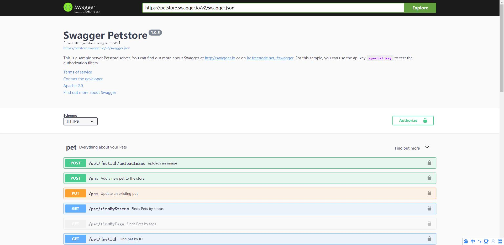
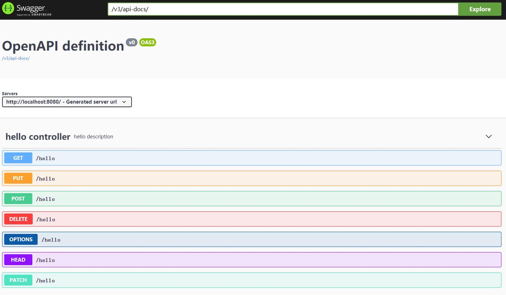
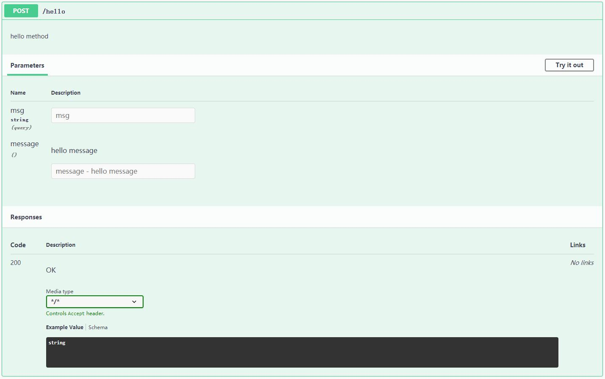
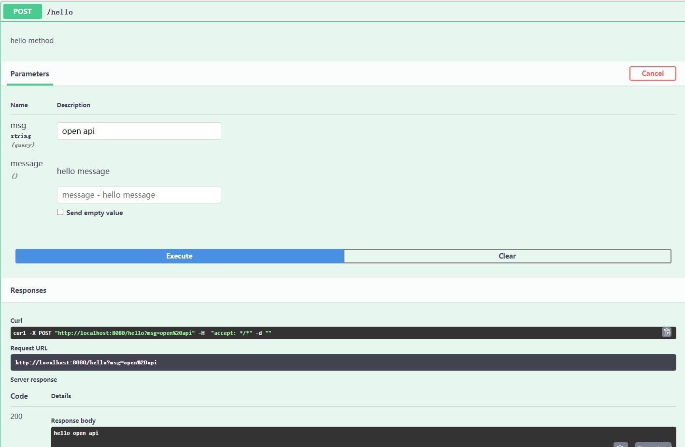

在WEB领域里面，随着前后端分离，后端的HTTP接口便需要去维护一份大而全的Rest API，一个比较靠谱的文档工具是必不可少的。
迭代中的系统，随着时间的推移，以前提供出去的接口，很快就会发生变化。同时去维护代码和接口文档，意味着工作量的增加，或者种种其他原因，导致接口和文档的不同步是家常便饭的事情。
那么如果文档是由代码注释或者类似的方式生成，便可以在一定程度上避免这样的事情。常规的方案就是使用OpenAPI规范，它的前身即大名鼎鼎的Swagger。
如何使用
首先引入依赖
<dependencies>
<dependency>
<groupId>org.springframework.boot</groupId>
<artifactId>spring-boot-starter-web</artifactId>
</dependency>
<dependency>
<groupId>org.springdoc</groupId>
<artifactId>springdoc-openapi-ui</artifactId>
<version>1.4.7</version>
</dependency>
</dependencies>
<dependencyManagement>
<dependencies>
<dependency>
<groupId>org.springframework.boot</groupId>
<artifactId>spring-boot-dependencies</artifactId>
<version>2.1.3.RELEASE</version>
<type>pom</type>
<scope>import</scope>
</dependency>
</dependencies>
</dependencyManagement>
启动后访问地址 ip:port/swagger-ui/index.html , 可以看到一个Swagge UI的界面，即可正常进行使用了，默认打开示例。

注解
OpenAPI 是Swagger v3 ，所使用的注解跟原来的有所区别。主要的一些注解如以下表格
| OpenAPI | swagger | 作用 |
|---|---|---|
| @Tag | @Api | 标签，表示请求类的作用 |
| @Operation | @ApiOperation | 描述请求方法 |
| @Parameter | @ApiParam | 描述接口参数 |
| @Schema | @ApiModel | 描述模型 |
| @ApiResponse | @ApiResponse | 描述返回的结果，包含返回码，信息等 |
交互式文档
ip:port/swagger-ui/index.html 开启的时候使用的是默认示例。当我们给自己的接口写上加上OpenAPI的注解后，可以在Swagger界面的Explore框里面填入/v3/api-docs/点击explore按钮来查看。

点开其中一个方法，有具体的描述，方法的用处，参数和返回等上述注解中所定义的内容。

点击右上角的【try it out】按钮，则可以出现一个模拟请求的交互界面。

填入对应的参数，然后点击【Execute】按钮即可发起请求，然后在Responses看到对应的结果。同时也有Curl和Request URL给出，可以比较方便地复制到其他地方使用。
这种交互性的文档对于开发者来说比较有用，可以不用再自己去装一个postman来做模拟请求。
对于有条件的团队，有自己的文档平台，那么可以通过 ip:port//v3/api-docs/ 来获取文档的内容，Swagger也只是提供了一个交互界面来呈现文档。
结语
OpenAPI规范，定义了一套文档标准，并提供了默认实现以及方便使用的交互性文档界面。但是注解对应用的侵入性比较大。